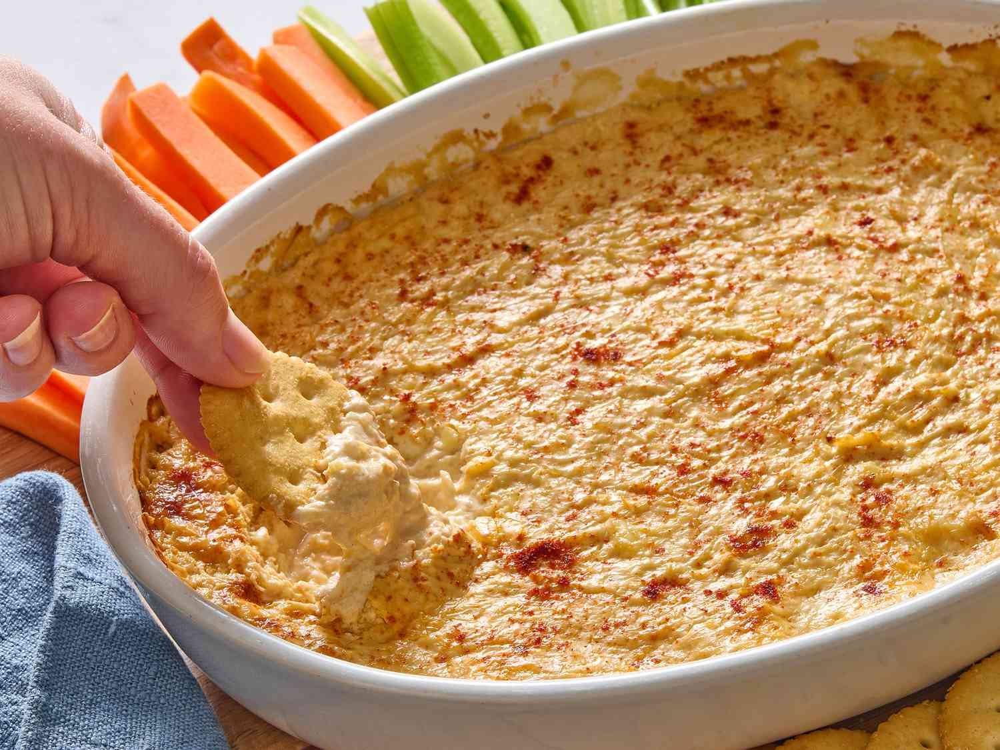

Home
Hot Crab Drip

Description
Hot Crab Drip is a delicious and easy appetizer that combines the rich, buttery texture of crab with the savory, spicy flavors of a drip sauce. These bites are perfect for parties, gatherings, or as a snack on a quiet evening.
The combination of crab and drip sauce creates a unique flavor profile that is both rich and spicy, while the drip sauce adds a satisfying heat and tanginess.
Ingredients
- Crab: Use fresh lump crab meat for best results.
- Drip Sauce: A blend of hot sauce, butter, and spices for the perfect kick.
- Bread Crumbs: For coating the bites before baking.
- Oil: For frying or roasting the bites.
Steps
- Preheat the oven to 375°F (190°C).
- Cut the crab into small cubes and set aside.
- In a bowl, mix together the crab cubes and drip sauce until well combined.
- Roll each mixture into small balls and coat them in bread crumbs.
- Fry or bake until golden brown and crispy on the outside.
- Serve warm with additional drip sauce on top if desired.